vignettes/docs/Dimensionality_Reduction.Rmd
Dimensionality_Reduction.RmdWe illustrate the use of dimensionality reduction methods to visualize high-dimensional data into low-dimensional (2D or 3D) space, so as to gain some intuition about their structure. A typical purpose of these visualizations is to carry out quick QC, to evaluate wether the data behaves as expected, or to identify (possibly unexpected) outliers or anomalies.
data(DMsubset)
subset <- c("TESTOSTERONE","DOXORUBICIN","DIAZEPAM")
dm3 <- dm10[,phenoData(dm10)$CHEMICAL %in% subset] # subset data on the 3 chemicals
phenoData(dm3)$CHEMICAL <- droplevels(phenoData(dm3)$CHEMICAL) # eliminate unused levels from factor
col_palette <- c("red","dark green","blue")
dm3_col <- col_palette[phenoData(dm3)$CHEMICAL]In this example, we show three commonly used dimensionality reduction algorithm with our toy dataset.
We start with Principle Component Analysis ‘PCA’, using the function prcomp. This will perform PCA using Singular Value Decomposition. We then print the summary statistics, which tell us the variance explained by each component. We then visualize the dataprojected on the first two components, and then projected on the 1st and 3rd component.
dm3_svd <- prcomp(Biobase::exprs(dm3), scale = TRUE) ## perform PCA
summary(dm3_svd)$importance[,1:4] ## show variance explained by each component## PC1 PC2 PC3 PC4
## Standard deviation 5.870621 0.3358374 0.221574 0.2197043
## Proportion of Variance 0.984690 0.0032200 0.001400 0.0013800
## Cumulative Proportion 0.984690 0.9879100 0.989320 0.9907000## let's plot the first two components
plot(x=dm3_svd$rotation[,"PC1"],y=dm3_svd$rotation[,"PC2"],col=dm3_col,
main="PCA",xlab="1st PC", ylab="2nd PC",pch=20)
legend("topleft",col=col_palette,legend=levels(phenoData(dm3)$CHEMICAL),pch=20)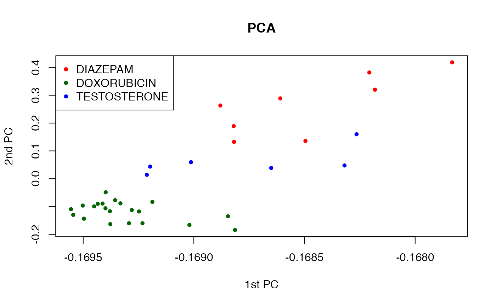
## let's plot the first and third component
plot(x=dm3_svd$rotation[,"PC1"],y=dm3_svd$rotation[,"PC3"],col=dm3_col,
main="PCA",xlab="1st PC", ylab="3rd PC",pch=20)
legend("topright",col=col_palette,legend=levels(phenoData(dm3)$CHEMICAL),pch=20)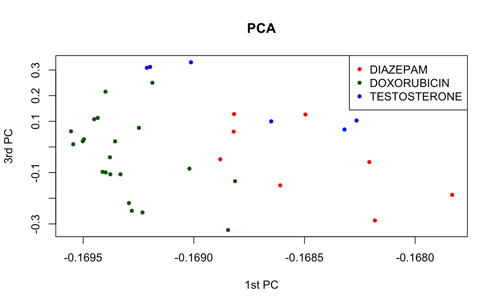
Let us use the “fancier” plotting functions in the ggplot package.
require(ggplot2)
df <- data.frame(x=dm3_svd$rotation[,"PC1"], y=dm3_svd$rotation[,"PC2"],
id=phenoData(dm3)$CHEMICAL)
p2 <- ggplot(df, aes(x=x, y=y, colour=id)) +
geom_point() +
theme_bw() +
xlab("PC1") + ylab("PC2") + ggtitle("PCA 1 vs. PCA2")
p2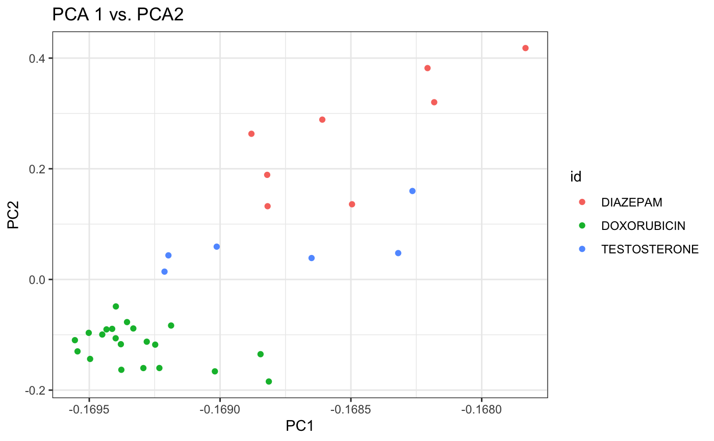
It appears that the first two components do a better job at separating the three chemicals than the 1st and 3rd components. We can bring it altogether in an interactive 3D plot.
library(plotly)
library(magrittr)
df.pca <- cbind(dm3_svd$rotation[,c(1:3)], as.character(phenoData(dm3)$CHEMICAL)) %>%
as.data.frame() %>%
magrittr::set_colnames(c("PC1", "PC2", "PC3", "id"))
plot_ly(df.pca,
x=~PC1,
y=~PC2,
z=~PC3,
type="scatter3d",
mode="markers",
color=~id,
marker=list(size=5))Next, we perform Principle Component Analysis ‘PCA’, using the function princomp. This will perform PCA using eigen decomposition. We then visualize the data projected on the first two components, and then projected on the 1st and 3rd component.
dm3_eg <- princomp(Biobase::exprs(dm3)) ## perform PCA
colnames(dm3_eg$loadings) <- paste0("PC", 1:length(colnames(dm3_eg$loadings)))Again with ggplot2.
df <- data.frame(PC1=dm3_eg$loadings[,"PC1"], PC2=dm3_eg$loadings[,"PC2"], PC3=dm3_eg$loadings[,"PC3"],
id=phenoData(dm3)$CHEMICAL)
p2 <- ggplot(df, aes(x=PC1, y=PC2, colour=id)) +
geom_point() +
theme_bw() +
xlab("PC1") + ylab("PC2") + ggtitle("PCA 1 vs. PCA2")
p2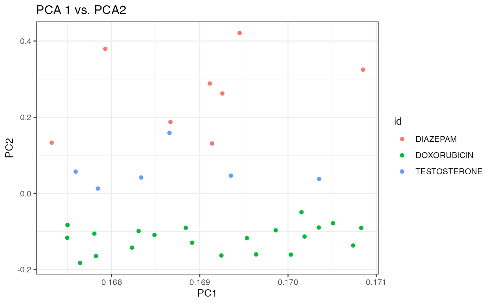
p3 <- ggplot(df, aes(x=PC1, y=PC3, colour=id)) +
geom_point() +
theme_bw() +
xlab("PC1") + ylab("PC3") + ggtitle("PCA 1 vs. PCA3")
p3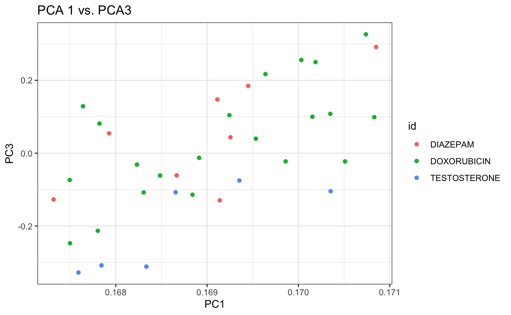
Again, it appears that the first two components do a better job at separating the three chemicals than the 1st and 3rd components. Debatable whether separation with is better with prcomp (SVD) than princomp (eigen decomposition).
Lastly, we carry out projection and visualization based on the t-SNE method (see this nice tutorial).
require(tsne)
# Create distance matrix (Euclidean)
distDM3 <- dist(t(Biobase::exprs(dm3)))
set.seed(123) ## t-SNE with perplexity=10
subset_tsne <- tsne(distDM3,k=2,initial_dims=300,max_iter=3000,perplexity=3)
plot(x=subset_tsne[,1],y=subset_tsne[,2],col=dm3_col,main="perplexity=3",pch=20)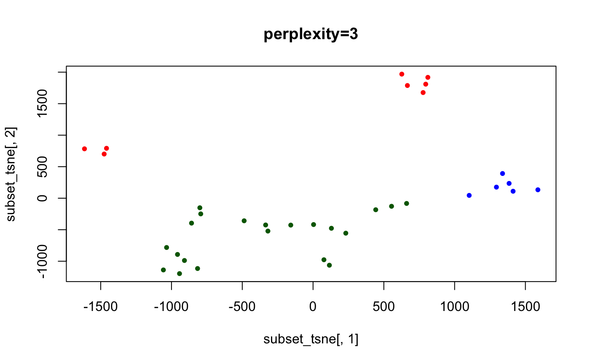
set.seed(123) ## t-SNE with perplexity=10
subset_tsne <- tsne(distDM3,k=2,initial_dims=300,max_iter=3000,perplexity=10)
plot(x=subset_tsne[,1],y=subset_tsne[,2],col=dm3_col,main="perplexity=10",pch=20)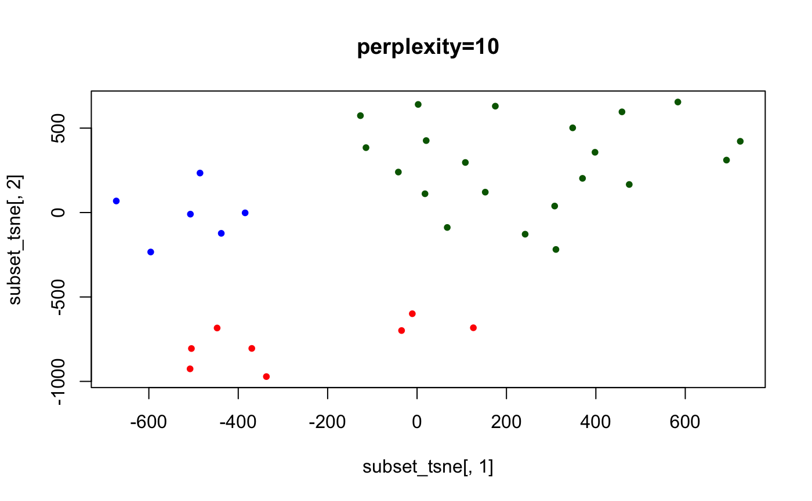
set.seed(123) ## t-SNE with perplexity=10
subset_tsne <- tsne(distDM3,k=2,initial_dims=300,max_iter=3000,perplexity=20)
plot(x=subset_tsne[,1],y=subset_tsne[,2],col=dm3_col,main="perplexity=20",pch=20)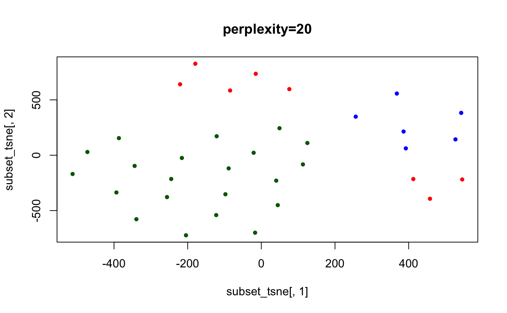
## here we show lack of "convergence" if not enough iterations are run
set.seed(123) ## t-SNE with perplexity=40
subset_tsne <- tsne(distDM3,k=2,initial_dims=300,max_iter=2000,perplexity=40)
plot(x=subset_tsne[,1],y=subset_tsne[,2],col=dm3_col,main="perplexity=30, 2K iterations",pch=20)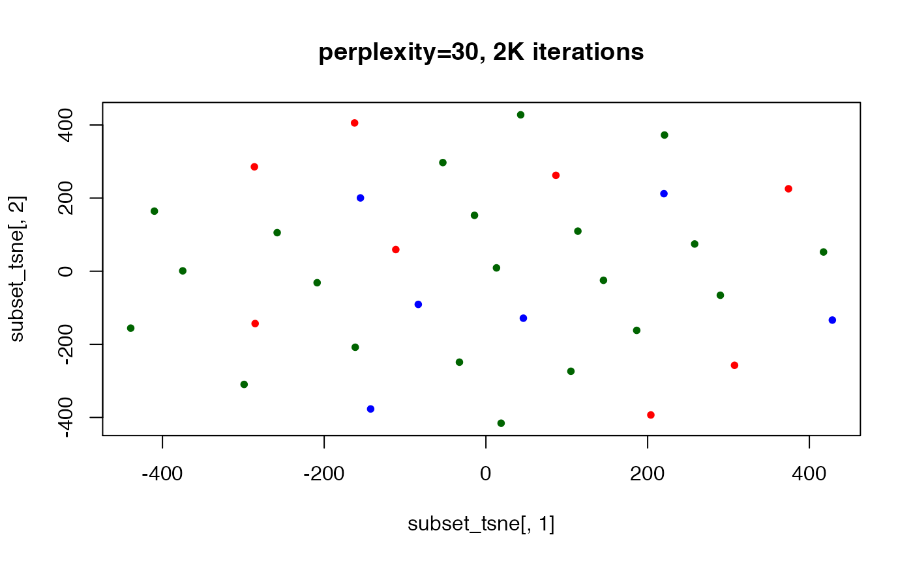
## convergence reached after 5000 iterations
set.seed(123) ## t-SNE with perplexity=30
subset_tsne <- tsne(distDM3,k=2,initial_dims=300,max_iter=5000,perplexity=30)
plot(x=subset_tsne[,1],y=subset_tsne[,2],col=dm3_col,main="perplexity=30, 5K iterations",pch=20)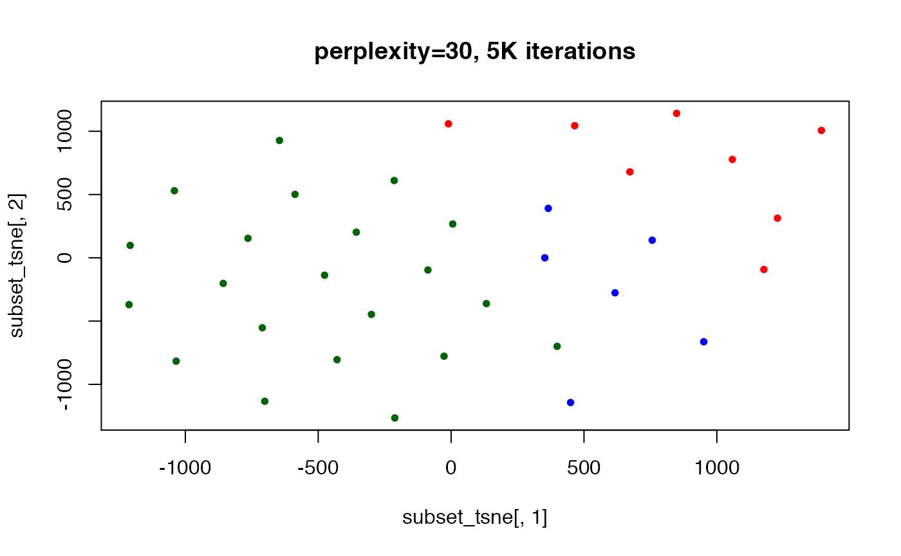
## here, the perplexity is too large to yield good separation (also
## ..tried w/ 10K iterations, not shown)
set.seed(123) ## t-SNE with perplexity=40
subset_tsne <- tsne(distDM3,k=2,initial_dims=300,max_iter=3000,perplexity=40)
plot(x=subset_tsne[,1],y=subset_tsne[,2],col=dm3_col,main="perplexity=40",pch=20)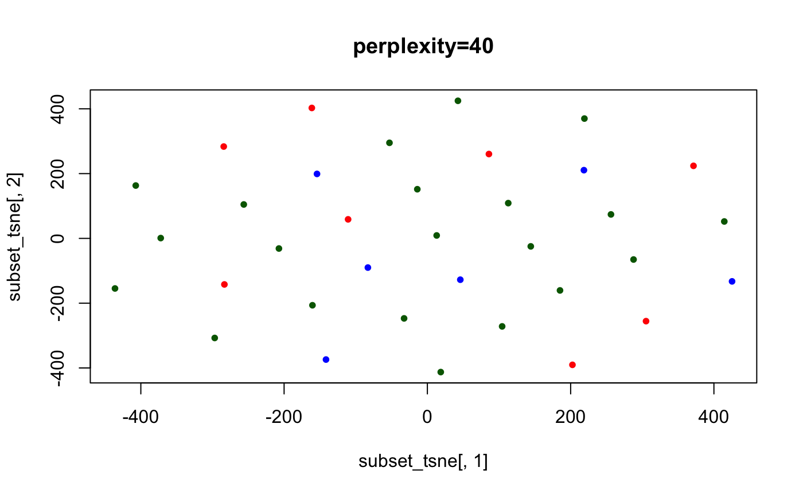
library(umap)
print(umap.defaults)
umap.custom <- umap.defaults
umap.custom$n_neighbors <- 3
umap.custom$n_components <- 3
umap.custom$metric <- "euclidean"
umap.data <- umap(t(Biobase::exprs(dm3)), config=umap.custom, method="naive")
df.umap <- umap.data$layout
colnames(df.umap) <- paste("C", seq_len(ncol(df.umap)), sep="")
df.umap <- as.data.frame(df.umap)
df.umap$id <- as.character(phenoData(dm3)$CHEMICAL)
head(df.umap)## C1 C2 C3 id
## 94151.CEL -10.525063 22.885314 -7.579127 DIAZEPAM
## 96366.CEL -10.455134 22.815423 -7.509185 DIAZEPAM
## 97769.CEL -9.929507 -6.004171 24.847695 DIAZEPAM
## 94334.CEL -9.760381 -5.835043 24.678580 DIAZEPAM
## 96375.CEL -10.158072 22.518477 -7.212086 DIAZEPAM
## 96881.CEL -10.724380 23.085014 -7.778317 DIAZEPAM